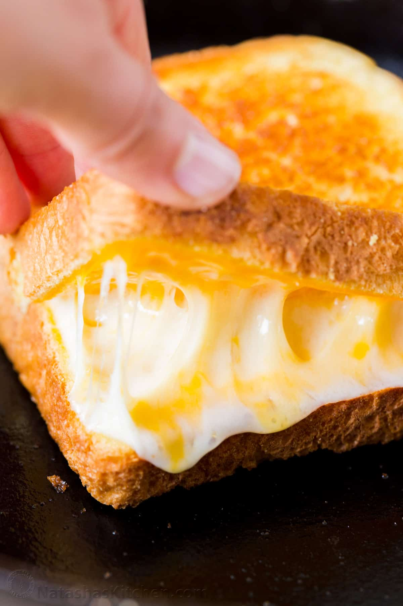

Grilled Cheese Sandwhich

Description
This recipe is for a simple grilled cheese sandwhich. I love a good grilled cheese as a
good snack to keep me full between meals. This recipe goes over the basic structure of this
sandwhich.
Ingredients
- Bread of your choice
- Butter of choice (at least 1/2 tbsp)
- Cheese of choice
Steps
- Butter the toast
- Heat skillet to ideal temp of 275 F
- Place bread buttered-side-down
- Stack cheese on one of the breads and place other bread on top preferablly toasted side down
- Add more butter if needed and continue toasting the bread and melting the cheese as needed
- Remove sandwhich and cut diagonally then serve
Return to home